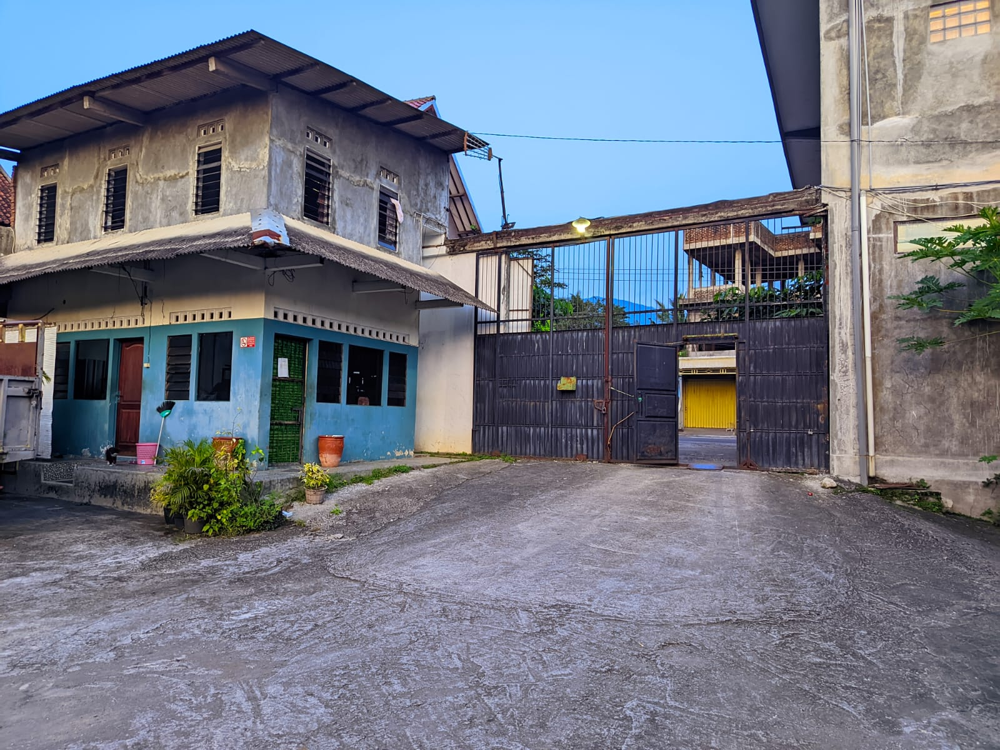

Temukan Lokasi Pondok Pesantren Al Ihsan Islamic Center dengan Mudah



Pondok Pesantren Al Ihsan Islamic Center berada di lingkungan yang tenang, nyaman, dan mendukung proses pendidikan serta pembinaan santri. Lokasi pondok mudah dijangkau dari berbagai daerah dan memiliki akses yang memudahkan wali santri saat berkunjung.
Selain menjadi tempat belajar Al-Qur'an, ilmu agama, dakwah, dan keterampilan hidup, pesantren juga menghadirkan suasana yang kondusif untuk membentuk karakter, kemandirian, dan akhlak mulia para santri.
Dengan lingkungan yang bersih, aman, dan asri, Pondok Pesantren Al Ihsan Islamic Center berkomitmen memberikan tempat terbaik bagi tumbuh kembang generasi muslim yang berilmu, berakhlak, dan bermanfaat bagi masyarakat.
Lingkungan pesantren yang nyaman membantu santri lebih fokus dalam belajar, beribadah, serta mengembangkan potensi diri dalam suasana yang penuh kebersamaan dan pembinaan.
Kami mengundang para calon santri dan wali santri untuk berkunjung langsung dan merasakan suasana pendidikan yang hangat, islami, dan penuh semangat dalam menuntut ilmu.
Temukan informasi penting mengenai lokasi dan layanan Pondok Pesantren Al Ihsan Islamic Center.
Alamat lengkap pondok dapat ditambahkan di sini.
Senin - Sabtu
08.00 - 16.00 WIB
08xxxxxxxxxx
email@pondok.com
Gunakan peta berikut untuk menemukan lokasi Pondok Pesantren Al Ihsan Islamic Center dengan lebih mudah.
Hubungi kami atau kunjungi langsung Pondok Pesantren Al Ihsan Islamic Center untuk mendapatkan informasi lebih lanjut.